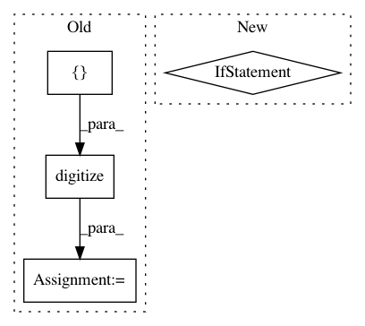

6889c6dbf8511382250bea9a5a36ceb0e1912f01,lib/matplotlib/projections/polar.py,PolarAxes,get_yaxis_text1_transform,#PolarAxes#Any#,550
Before Change
// ["left", "right", "right", "left"]]
["left", "left", "left", "left"]]
ind = np.digitize([angle], np.arange(0, 361, 90))[0] - 1
return self._yaxis_text_transform, valign[full][ind], halign[full][ind]
def get_yaxis_text2_transform(self, pad):
After Change
def get_yaxis_text1_transform(self, pad):
thetamin, thetamax = self._realViewLim.intervalx
if _is_full_circle_rad(thetamin, thetamax):
return self._yaxis_text_transform, "bottom", "left"
elif self.get_theta_direction() > 0:
halign = "left"
pad_shift = _ThetaShift(self, pad, "min")
else:
halign = "right"
pad_shift = _ThetaShift(self, pad, "max")
return self._yaxis_text_transform + pad_shift, "center", halign
def get_yaxis_text2_transform(self, pad):
if self.get_theta_direction() > 0:
In pattern: SUPERPATTERN
Frequency: 3
Non-data size: 4
Instances
Project Name: matplotlib/matplotlib
Commit Name: 6889c6dbf8511382250bea9a5a36ceb0e1912f01
Time: 2017-09-25
Author: tcaswell@gmail.com
File Name: lib/matplotlib/projections/polar.py
Class Name: PolarAxes
Method Name: get_yaxis_text1_transform
Project Name: scikit-learn-contrib/DESlib
Commit Name: cd1a5446ce793d09f28d021c466a279301eb51f0
Time: 2018-04-01
Author: rafaelmenelau@gmail.com
File Name: deslib/des/meta_des.py
Class Name: METADES
Method Name: estimate_competence
Project Name: matplotlib/matplotlib
Commit Name: 8c430e84863f1a1f7492206ea399215b75a7c4cd
Time: 2017-09-25
Author: quantum.analyst@gmail.com
File Name: lib/matplotlib/projections/polar.py
Class Name: PolarAxes
Method Name: get_yaxis_text1_transform